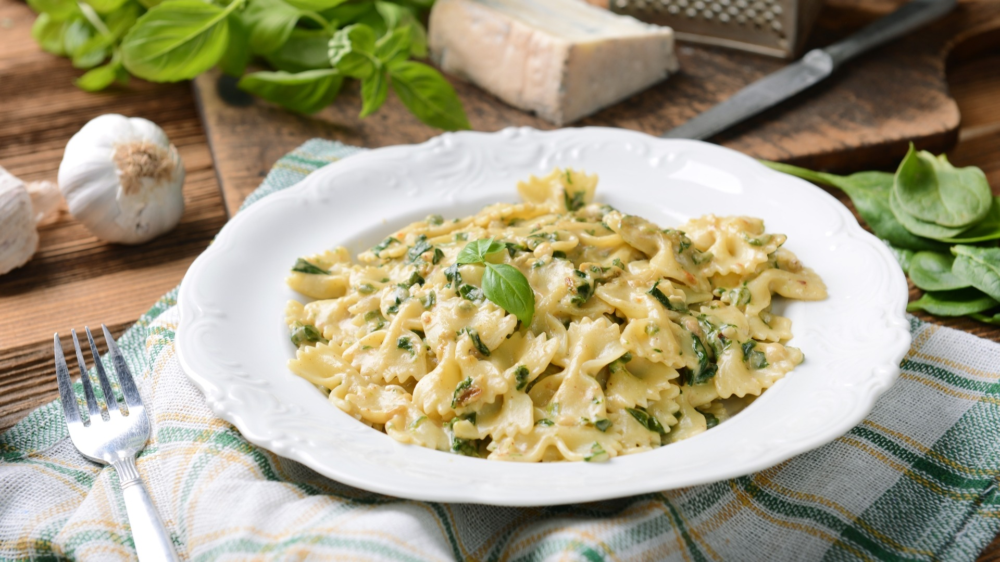

Mushroom Pasta

Description
Mushroom pasta with fresh herbs, goat cheese and lemon. Deliciously easy!
Ingredients
- Farfalle paste
- Mixed mushrooms: cremini, button, shiitake and oyster
- 2 tablespoons olive oil
- 1 tablespoon fresh lemon juice
- 3 cups baby greens: baby kale or spinach
- ¼ cup Parmesan cheese, grated
- 3 to 4 ounces soft goat cheese
- Salt and pepper
Steps
- Cook the pasta in heavily salted boiling water until al dente. Pro tip: Set the timer for a few minutes less than the package instructions and then taste: the pasta should be just done, still with some firmness. The pasta should also taste salty from the salted water. Drain the pasta and save out ¼ cup pasta water.
- Meanwhile, clean the mushrooms, then slice them. Chop the herbs.
- In a saute pan or skillet, heat the olive oil to medium high heat and cook the herbs, mushrooms, and several pinches of kosher salt together for about 5 minutes, stirring occasionally. When mushrooms are cooked and tender, reduce heat to low, add lemon juice, greens and few more pinches of kosher salt. Cook for about 2 minutes until greens are wilted but bright green. Add the Parmesan cheese and pasta water and stir until cheese is melted.
- Add the drained pasta into the mushrooms. Add fresh ground black pepper and kosher salt to taste. Use your fingers to break off crumbles of the goat cheese and add it to the pasta; stir them in if desired. Serve immediately.